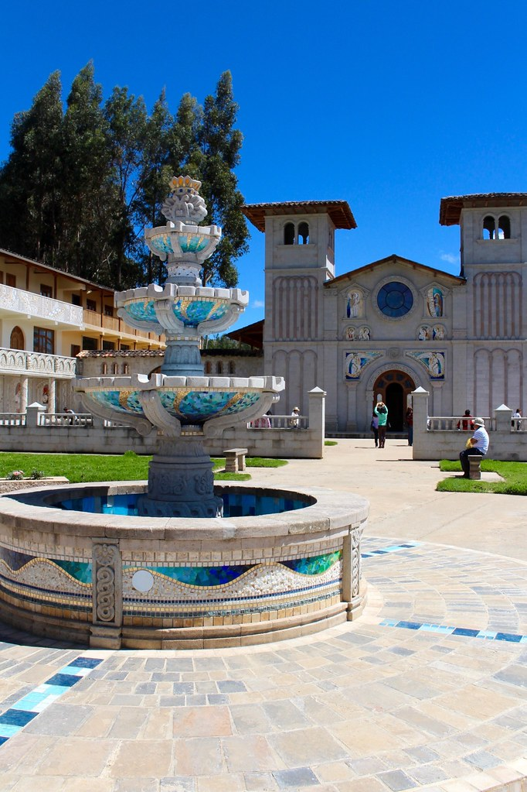

Cuarto De Rescate
Visita el histórico lugar donde el Inca Atahualpa fue retenido.
Visitar Experiencia
Santa Apolonia
Contempla la ciudad de Cajamarca desde su mirador más emblemático.
Visitar Experiencia

Iglesia De Polloc
Admira el santuario conocido por su arte moderno y devoción popular.
Visitar Experiencia
Ventanillas De Otuzco
Explora las enigmáticas tumbas nicho pre-incas talladas en roca volcánica.
Visitar Experiencia